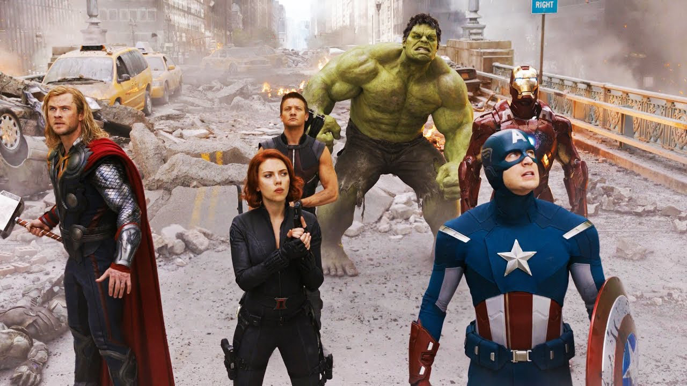

Кинематографи́ческая вселе́нная Marvel (англ. Marvel Cinematic Universe; сокр. КВМ (англ. MCU)) — американская медиафраншиза, вымышленная общая вселенная и серия фильмов о супергеярох, основанная на комиксах издательства Marvel Comics и разработанная кинокомпанией Marvel Studios. Во франшизу также входят телесериалы, короткометражные фильмы, веб-сериалы и книжная продукция. Как и оригинальная вселенная Marvel Comics, киновселенная была создана путём соединения в общую сюжетную линию нескольких фильмов и сериалов
На данный момент вышел тридцать один фильм. Marvel Studios группирует свои фильмы в «Фазы». Первые три фазы известны под названием «Сага Бесконечности», а следующие три фазы — «Сага Мультивселенной». Первый фильм КВМ, «Железный человек» (2008), начал Первую фазу, кульминацией которой стал фильм-кроссовер 2012 года «Мстители». Вторая фаза началась с «Железного человека 3» (2013) и завершилась «Человеком-муравьём» (2015). Третья фаза началась с фильма «Первый мститель: Противостояние» (2016) и завершилась фильмом «Человек-паук: Вдали от дома» (2019). Четвёртая фаза началась с «Чёрной вдовы» (2021) и завершилась «Чёрной пантерой: Ваканда навеки» (2022). «Человек-муравей и Оса: Квантомания» (2023) начал Пятую фазу, которая закончится «Блэйдом» (2024). Шестая фаза начнётся с «Дэдпула 3» (2024), а завершится, как и «Сага Мультивселенной», фильмом «Мстители: Секретные войны» (2026).бщими актёрами, персонажами и событиями.
Подразделение Marvel Television расширило события киновселенной в телесериалах, начиная с «Агентов „Щ.И.Т.“» (2013—2020) на канале ABC; затем телесериалы были созданы для стриминговых сервисов Netflix и Hulu, а также для канала кабельного телевидения Freeform; веб-сериал «Агенты «Щ.И.Т.»: Йо-Йо» также расширил киновселенную. С 2018 года Marvel Studios начала продюсировать собственные телесериалы для Disney+, отличные от Marvel Television. Первым подобным проектом стал мини-сериал «Ванда/Вижн» (2021), начавший Четвёртую фазу КВМ. В киновселенную также входят комиксы тай-ины издательства Marvel Comics, серия короткометражных фильмов «Marvel One-Shots» и вирусная маркетинговая кампания для фильмов, включающая программы «WHIH Newsfront» и «The Daily Bugle».
К 2005 году компания Marvel Entertainment начала планировать независимое производство собственных фильмов и их распространение через Paramount Pictures[2]. Ранее студия выступала сопродюсеромruen нескольких фильмов о супергерояхruen вместе со студиями Columbia Pictures, New Line Cinema и другими (наиболее заметным являлся семилетний контракт с 20th Century Fox)[3]. Лицензионные сделки приносили Marvel относительно небольшую прибыль, а студия хотела работать эффективнее и сохранять творческий контроль над своими проектами и заниматься их распространением[4]. Ави Арад, глава киноотделения Marvel, остался доволен фильмами Сэма Рэйми о Человеке-пауке производства Sony Pictures, но проекты других студий принесли ему разочарование. В результате Арад решил создать Marvel Studios, первую крупную независимую киностудию Голливуда со времён DreamWorks[5].
В ноябре 2017 года стало известно о планах Disney по разработке телесериалов Marvel для своего стриминг-сервиса Disney+[42]. В июле 2018 года Кевин Файги отметил, что уже начал обсуждать с руководством Disney возможное включение проектов Marvel Studios в потоковый сервис, поскольку Файги посчитал сервис «важным для компании»[43]. В сентябре того же года появились сообщения о разработке Marvel Studios нескольких мини-сериалов, посвящённых персонажам «второго плана» из фильмов КВМ, которые не получили и вряд ли получат собственные сольные фильмы. Ожидалось, что каждый подобный проект будет состоять из 6-8 эпизодов и будет производиться силами Marvel Studios, а не Marvel Television, причём Файги будет напрямую участвовать в разработке этих проектов[44]. Он отметил, что каждый сериал, разрабатываемый для стриминг-сервиса, будет «рассказывать истории…, которые не могли быть показаны в кинотеатрах — [поскольку] они являются более длинным повествованием»[45]. Файги также добавил, что поручение компании Disney по разработке этих сериалов «зарядило всех [в Marvel Studios] творчески», поскольку «стало возможным играть в новой среде и отбросить старые правила с точки зрения структуры и формата»[46]. В июле 2019 года на Комик-коне в Сан-Диего Файги анонсировал несколько фильмов и телесериалов в рамках Четвёртой фазы КВМ[20]. В августе того же года на выставке D23 и в декабре 2020 года на дне инвесторов Disney были анонсированы семь новых сериалов и специальный выпуск для Disney+[21][22][23]. В феврале 2021 года все эти проекты были включены в Четвёртую фазу[47], а в августе того же года состоялся анонс второго специального выпуска[48][49]. Четвёртая фаза КВМ включает в себя первый анимационный сериал Marvel Studios «Что, если…?», и в июле 2021 года стало известно, что внутри Marvel появилась «анимационная мини-студия», которая сосредоточится на создании нового анимационного контента, помимо «Что, если…?»[50]. В ноябре 2021 года на Дне Disney+ и в последовавшие несколько месяцев было объявлено о разработке семи новых сериалов для новой фазы киновселенной[51][52][53][54][55].
Детальніше ви зможете подивитися ось тут 